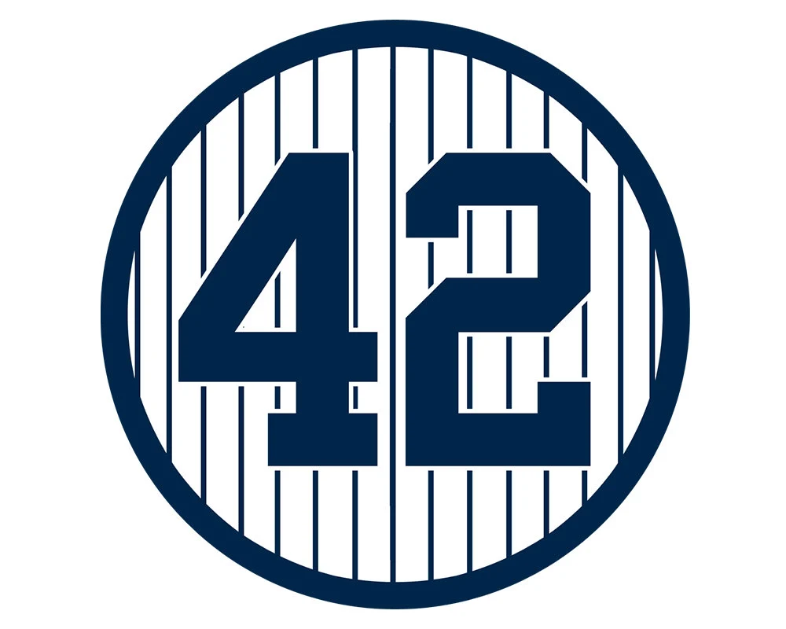

Billy Martin
Infielder
Years with Team: 1950 - 1957
1x All-Star (1956)
4x World Series
|

Derek Jeter
Shortstop
Years with Team: 1995 - 2014
Hall of Fame,
14x All-Star
Rookie of the Year (1996)
5x World Series,
5x Silver Sluger
5x Gold Glove,
AS MVP,
World Series MVP (2000)
|
Babe Ruth
Outfielder
Years with team: 1920 – 1934
Hall of Fame
MVP (1923)
2x All-Star
7x World Series
|

Lou Gehrig
First Baseman
Years with team: 1923 – 1939
Hall of Fame
2x MVP (1927, 1936)
Triple Crown
6x World Series
|
|
Joe DiMaggio
Centerfielder
Years with team: 1936 – 1951
Hall of Fame
3x MVP (1939, 1941, 1947)
13x All-Star
9x World Series
2x Batting Title
|
Joe Torre
Manager
Years with team: 1996 – 2007
Hall of Fame
4x World Series
6x AL Pennant
2x Manager of the Year
|
Mickey Mantle
Centerfielder and First Baseman
Year with team: 1951 – 1968
Hall of Fame
3x MVP
Triple Crown
20x All-Star
7x World Series
Gold Glove
Batting Title
|
Yogi Berra
Catcher and Outfielder
Years with team: 1946 – 1963
Hall of Fame
3x MVP
18x All-Star
10x World Series
|
Roger Maris
Rightfielder
Years with team: 1960 – 1966
2x MVP
7x All-Star
3x World Series
|
Phil Rizzuto
Shortstop
Years with team: 1941 – 1956
Hall of Fame
MVP
7x World Series
5x All-Star
|
Thurman Munson
Catcher
Years with team: 1969 – 1979
MVP
Rookie of the Year
7x All-Star
2x World Series
3x Gold Glove
|
Whitey Ford
Pitcher
Years with team: 1950 – 1967
Hall of Fame
Cy Young
10x All-Star
6x World Series
WS MVP
|
Jorge Posada
Catcher
Years with team: 1995 – 2011
5x All-Star
4x World Series
5x Silver Slugger
|
Paul O’Neill
Rightfielder
Years with team: 1993 – 2001
5x All-Star
5x World Series
Batting Title
|
Don Mattingly
First Baseman and Outfielder
Years with team: 1982 – 1995
MVP
6x All-Star
9x Gold Glove
3x Silver Slugger
Batting Title
|

Elston Howard
Catcher, Leftfielder and First Baseman
Years with team: 1955 – 1968
MVP
12x All-Star
2x Gold Glove
4x World Series
|
|
Casey Stengel
Manager
Years with team: 1949 – 1960
Hall of Fame
10x AL Pennant
7x World Series
|

Mariano Rivera
Pitcher
Years with team: 1995 – 2013
Hall of Fame
13x All-Star
5x World Series
WS MVP
AS MVP
|
Reggie Jackson
Rightfielder
Years with team: 1977 – 1981
Hall of Fame
MVP
14x All-Star
5x World Series
|
Andy Pettitte
Pitcher
Years with team: 1995 – 2003, 2007-10, 2012-13
3x All-Star
5x World Series
|
|
Ron Guidry
Pitcher
Years with team: 1975 – 1988
Cy Young
4x All-Star
2x World Series
2x ERA Title
|
Bernie Williams
Centerfielder
Years with team: 1991 – 2006
5x All Star
4x World Series
Silver Slugger
Batting Title
|